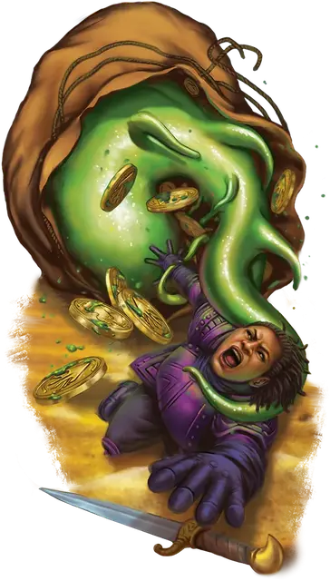

Сумочный студень
Bag Jelly
Средняя Слизь, без мировоззрения

Класс Доспеха 8
Хиты 42 (5к8 + 20)
Скорость 10 футов, лазая 10 футов
| мод | спас | ||
|---|---|---|---|
| СИЛ | 13 | +1 | +1 |
| ЛОВ | 6 | −2 | −2 |
| ТЕЛ | 19 | +4 | +4 |
| мод | спас | ||
|---|---|---|---|
| ИНТ | 2 | −4 | −4 |
| МДР | 7 | −2 | −2 |
| ХАР | 2 | −4 | −4 |
Сопротивление урону кислота; дробящий
Иммунитет к состояниям истощение
Чувства слепое зрение 60 футов (не видит за пределами этого радиуса), пассивное Восприятие 8
Опасность 1 (200 опыта)
Бонус мастерства +2
Особенности
Аморфный. Сумочный студень может перемещаться сквозь пространство шириной в 1 дюйм без протискивания.
Действия
Мультиатака. Студень из сумки совершает две атаки Ложноножками.
Ложноножка. Рукопашная атака оружием: +3 к попаданию, досягаемость 5 футов, одна цель. Попадание: 8 (2к6 + 1) урона кислотой. Если целью является существо Среднего размера или меньше, оно схвачено (Сл высвобождения 15). Проверки для высвобождения из этого захвата совершаются с помехой.
Описание
В дварфийской саге утверждается, что сумочный студень — результат проклятия, наложенного Дургридом Блейдфорджем, который был забит до смерти, когда прятался в мешке великана
- Бигби
Я не отношусь к дварфийским сагам свысока, но всем известно, что еда, оставленная в мешке надолго, иногда оживает. "Съешь это, пока оно не съело тебя". Это мой девиз.
- Дианкастра
Сумочные студни — оливково-оранжевые слизистые существа, похожие на падальщиков подземелий, описанных в «Бестиарии». Как следует из названия, эти существа чаще всего встречаются в сумках, которые носят великаны, где они питаются любыми органическими материалами, которые находят. Сумочные студни устойчивы к раздавливанию, что помогает им выжить, когда великан бросает сумку, садится на неё или использует в качестве самодельной дубинки.
Некоторые великаны следят за чистотой своих сумок, чтобы не привлекать сумочных студней, но другие используют этих падальщиков, чтобы помешать ворам. Многие потенциальные воры, роющиеся в сумке спящего великана, оказываются прилипшими к липкой поверхности сумочного студня и не могут убежать, поскольку звук их борьбы будит великана.